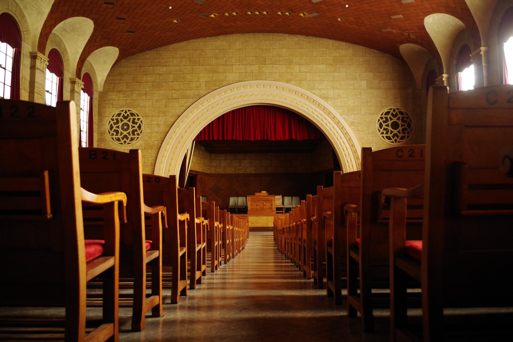

WORSHIP
礼拝
凛とした女の子に
おなりなさい

これは作家の阿久悠さんの言葉であり、
女学院の礼拝で耳にした言葉。
凛としているとは自由で強くて
やさしい子のこと。
自分がどうしたらいいか
わからなくなった時、
ふと思い出されて、
進むべき道を教えてくれる気がする。
そんなお話を
毎日聞こくことのできる礼拝。
静かに自分と向き合う時間を持つことは
きっと人生の財産になる。
おなりなさい
これは作家の阿久悠さんの言葉であり、
女学院の礼拝で耳にした言葉。
凛としているとは自由で強くて
やさしい子のこと。
自分がどうしたらいいか
わからなくなった時、
ふと思い出されて、
進むべき道を教えてくれる気がする。
そんなお話を
毎日聞こくことのできる礼拝。
静かに自分と向き合う時間を持つことは
きっと人生の財産になる。
SCHOOL
SPIRIT
自由な校風
ただ自由なわけじゃない
女学院には制服がなくて規則も多くない。
自由な校風が魅力の一つ。
でもただ自由なわけじゃない。
自由には責任が伴うことを学ぶ。
自由と自治の精神が先輩から後輩に受け継がれ
だからこそ、生徒主体が保たれる。
そして自由な分、個性豊かな人が多い。
自分とは違った価値観・考え方の人がいる。
その分ぶつかることもたくさんある。
でも自分の知らない世界を知ることができる。
自分が受け入れる時、受け入れられた時こそ、
世界が広がる。
個性の素晴らしさに気づけるそんな環境が女学院にはある。
EDUCATION
女学院でしか味わえない
授業
知ることの
楽しさに出会える
聖書
聖書の授業ではキリスト教の基礎知識や、愛神愛隣の精神を学ぶ。
こう聞くとなんだか難しそうと少し気が引けてしまう人もいるかも知れない。
でも難しい話ばかりじゃない。
聖書の授業は実は身近な宗教の存在を気づかせてくれる授業。
ジブリの作品を宗教の観点から見たり、宗教絵画の背景を紐解いてみたり。
また世界で起こっている問題を考える上で宗教は欠かせない。
宗教に触れることでグローバルな視点を持つことの重要性に気づくことができる。
英語
英語の授業は全て英語で進められる。でもひたすら英語を勉強するわけじゃない。
劇をしたり、歌を歌ったり、映画をみたり。
授業で覚えた英語の歌を女学院生が口ずさんでいるのを聞く機会は少なくない。
英語ができるようになるだけじゃなくて、英語が好きになる。その文化が好きになる。
語学の観点だけでなく多様な文化の面白さも教えてくれる授業。
家庭科
家庭科の授業では着付けや、裁縫、料理、災害時の対策など生活の知恵を多く学ぶ。
調理実習では、食材の活かし方や基本の調理法を学びつつも、
テーマに沿ってグループごとに自由に食材を用意し、テーブルには個性あふれる料理が並ぶ。
自分たちで試行錯誤して学ぶことのできる、女学院らしい授業であり、
女学院生にも人気の授業の一つ。
家庭科の授業で楽しみながら得た知識、経験は今も日々の生活の中で多く生かされている。
CAMPUS
キャンパス
「真に芸術的な建築・学習空間は優れた人格を形成する」
ウイリアム・メレル・ヴォーリズ
重要文化財に指定されている女学院のキャンパス。
でもただ景観が美しいのではない。
講堂ロビーには音が響かないようゴムタイルが使用され、
教室は掃除がしやすいように壁と床の間は丸くなっている.
階段は一段一段は低く疲れにくいように。
広い校舎は渡り廊下で繋がっていて
雨に日も濡れずに移動できる。
建築家ヴォーリズ氏の優しさが溢れる校舎は
日々の学生生活をより豊かなものにしてくれる。
誰もが帰ってきたくなるような温かく
自然豊かなこの環境は
在校生・卒業生にとってHomeと言える存在。
講堂と並んで人気な場所
メインゴフ
メインゴフは女学院で一番広いお手洗い。
お手洗いが人気な学校って珍しい。
光が入ってキラキラと光る神秘的な
ステンドグラスが魅力の一つ。
自然豊かで広々とした
中庭
女学院では中高生が大学の敷地にも
自由に足を踏み入れることができる。
映画の撮影に使われたのこともある中庭は
忙しい学生生活の中でホッと一息でいる空間。
アーチ窓から優しい光が差し込む
ソールチャペル
講堂の他にもう一つチャペルがある。
外観は荘厳で美しくも、窓から差し込む光で
温かみのあるソールチャペル。
キャンパス・ウエディングもできる特別な場所。